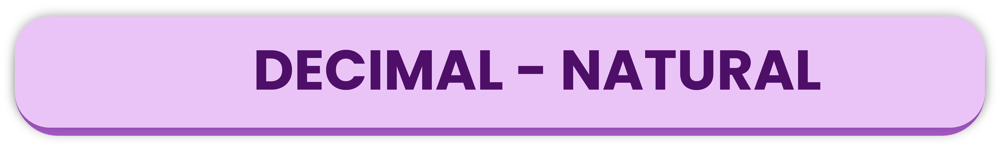

En la isla Santa Cruz en Galápagos residen personas de Ambato, Esmeraldas y Quito que trabajan atendiendo a los turistas nacionales y extranjeros en el mercado artesanal. Estéfano tiene $50 y compra una camiseta en $12,50; además un peluche de tortuga en $16,50 y 4 recuerdos en $1,20 cada uno.
Contesta mentalmente.
✓ ¿Qué operación se realiza para saber el gasto total en las compras? ✓ ¿Qué operación se realiza para conocer cuánto dinero queda? ✓ ¿Cuál es el precio total de los 4 recuerdos?
Suma
Ejemplo:
Si deseamos sumar las siguientes cantidades expresadas en decimales, 128,46 + 39,57. Seguiremos los siguientes pasos:
1. Ubicamos los sumandos uno debajo del otro, coincidiendo con el separador decimal (coma).
2. Las sumas se llevan a cabo como se conocen normalmente, la única consideración es conservar la coma en el lugar que le corresponde.
Problema: Mario tiene una soga de 3,30 metros y Sara tiene una soga de 2,70 metros. Si deciden unir sus sogas, ¿cuántos metros tendrán entre los dos?
Si al problema lo representamos en una recta númerica:
Nos podemos dar cuenta que la suma de ambas sogas es de 6 metros en total, entonces ahora lo expresaremos tradicionalmente a la suma de estos decimales para comprobar que su representación en la recta es correcta.
1. Se ubican los sumandos uno debajo del otro. Empleamos la primera suma de derecha a izquierda; 0 + 0 = 0, así que ubicamos el 0.
2. Efectuamos la segunda suma, 3 + 7 = 10. Como no se pueden ubicar las dos cifras, debemos acarrear o llevar, es decir, el 1 se coloca en la siguiente casilla a la izquierda y se deja el 0.
3. El saparador decimal se lo deja en la posición donde se econtraba en un inicio.
4. Efectuamos la última suma, la que se encuentra en la parte entera, 3 + 2 = 5, pero como en la anterior suma se acarreo un 1, esta se suma así que sería 3 + 2 + 1 = 6.
El resultado es correcto al unir las sogas de Mario y Sara, da un total de 6 metros. Los decimales ya no se cuentan ya que son 0, mientras que la parte entera es 6. Es uno de los tantos resultados que podemos obtener al realizar este tipo de operaciones con decimales.
Resta
Ejemplo:
Si deseamos restar las siguientes cantidades expresadas en decimales, 24,5 - 10,36. Seguiremos los siguientes pasos:
1. Ubicamos el sustraendo debajo del minuendo, y debe hacer coincidir las cifras.
2. Como se mencionó anteriormente, si algún número no tiene la misma cantidad de cifras decimales, se debe completar con un 0. En la resta, esto es aún más importante, ya que permite realizar la resta correctamente en cuanto a la cantidad de decimales.
3. Las restas se llevan a cabo como se conocen normalmente, la única consideración es conservar la coma en el lugar que le corresponde.
Problema: Juan tiene $35.75 y gasta $12.45 en comprar libros. Luego, gasta $8.60 en un almuerzo. ¿Cuánto dinero le queda a Juan después de estas dos compras?
El problema nos pide hacer dos restas, la primera con los libros y el segundo con el resultado que se obtenga restarlo por el almuerzo que Juan compro después.
Costo de los libros
1. Se ubica el sustraendo debajo del minuendo. El dinero que tenía Juan será el minuendo ($35,75) y el sustraendo será lo que pagó por los libros ($12,45). Efectuamos la primera resta de derecha a izquierda: 5 - 5 = 0.
2. Efectuamos la segunda resta 7 - 4 = 3.
3. Bajamos la coma en la misma columna en donde se encuentra y realizamos la tercera resta que se encuentra en la parte entera, 5 - 2 = 3.
4. Realizamos la cuarta resta 3 - 1 = 2.
Ahora lo que gasto en el almuerzo. El ejercicio queda expresado de la siguiente manera. Ahora te toca a tí desarrollar el ejercicio y responder a la pregunta. ¡Éxitos!
Multiplicación
Ejemplo: Si deseo multiplicar los siguientes números decimales 235,6 x 4,7:
1. Ordenamos la multiplicación una debajo de la otra.
2. Resuelvo la primera multiplicación; empiezo con el número 7 por cada uno de los números del multiplicando. Quedaría 6 x 7 = 42, ubico el 2 y acarreo el 4.
3. Resuelvo la segunda multiplicación 7 x 5 = 35 + 4 (acarreo) = 39, escribo el 9 y acarreo el 3.
4. Resuelvo la siguiente multiplicación 7 x 3 = 21 + 3 (acarreo) = 24, escribo el 4 y acarreo 2.
5. Resuelvo 7 x 2 = 14 + 2 = 16, como ya no tengo mas números para multiplicarlos con el 7 se escribe la al 16 completo.
6. Continuamos con el siguiente multiplicador que es el 4. Y realizamos la suma como comunmente se realiza y ese será el resultado.
7. Para ubicar la coma decimal, se debe saber el número de cifras decimales. Este paso es sencillo de acuerdo a cuantas cifras decimales tengas será la referencia para ubicar la coma.
División
Ejemplo:

Cuando el dividendo es decimal y el divisor es un número natural se lo realiza como si ambos fueran números naturales.
Cuando el dividendo es un número natural y el divisor es un número decimal. Lo que se debe tener en cuenta es que no se puede dividir teniendo decimales en el divisor, por el cual se realiza el siguiente proceso.
Se iguala en número de cifras en el dividendo y el divisor con ceros. Luego se quitan las comas y se realiza las divisiones como si fueran números naturales.
Aquí tienes algunos ejercicios para que práctiques las divisiones con números decimales. ¡Éxitos!
Combinación
Para las operaciones combinadas con los números decimales, el proceso no es diferente a las operaciones combinadas con los naturales.
Observa el siguiente video de combinaciones de operaciones con números decimales.
Tomando de Podemos aprobar matemáticas. (2018). Operaciones combinadas con decimales [Youtube]
Revisa la diapositiva que contiene algunos ejemplos de combinaciones con números decimales.


 5. Resuelvo 7 x 2 = 14 + 2 = 16, como ya no tengo mas números para multiplicarlos con el 7 se escribe la al 16 completo.
5. Resuelvo 7 x 2 = 14 + 2 = 16, como ya no tengo mas números para multiplicarlos con el 7 se escribe la al 16 completo.